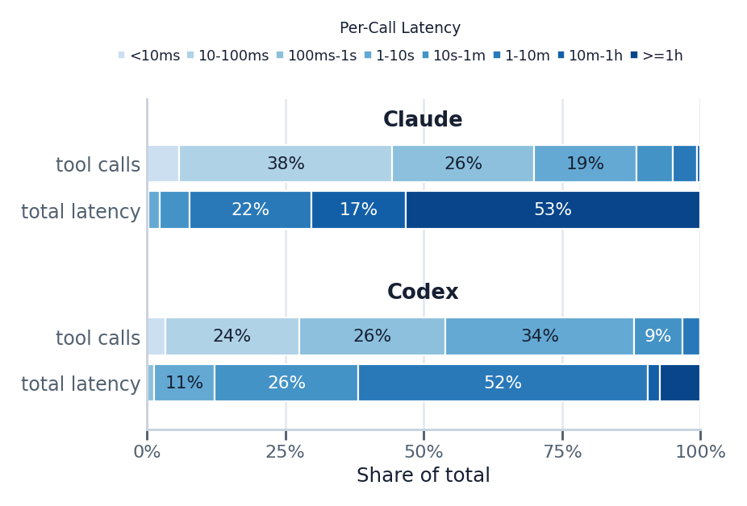
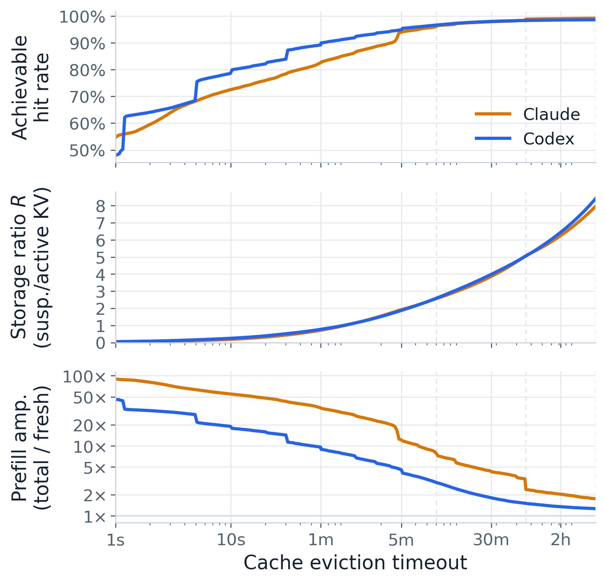
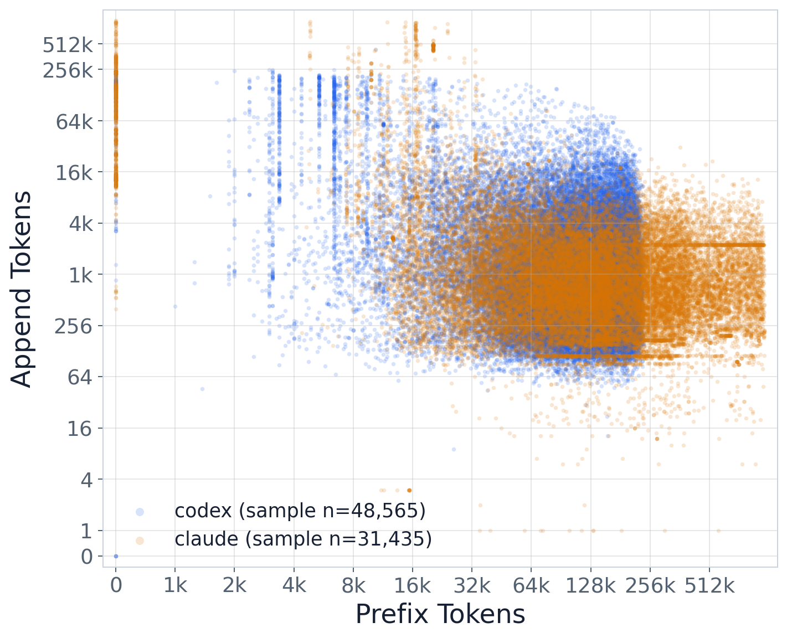
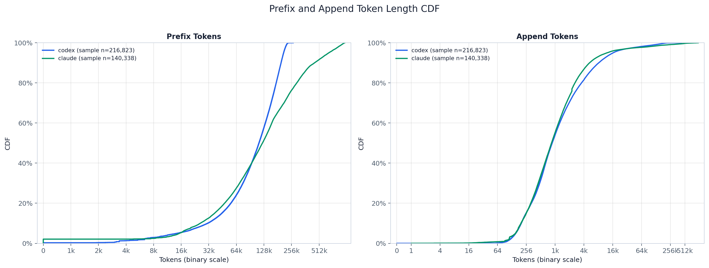

TraceLab — Reproducing Coding-Agent Workload Traces for KV-Cache Analysis
A hands-on reproduction of UW SyFI's TraceLab dataset (4,265 anonymized Claude Code / Codex sessions), read through the lens of KV-cache pressure in agentic AI: long per-session prefixes, heavy-tailed tool latency, decode-dominant short appends, and human-wait cache eviction.
Overview
TraceLab is a normalized, anonymized dataset of real coding-agent sessions — numeric metadata only (per-step token counts, tool latencies, human wait times); no conversation or code content. It ships a GPU-free Python + DuckDB analysis pipeline (one folder per question) plus an Astro web app. This page documents what I downloaded, verified, and reproduced, and the four cache-focused questions I pulled out of it.
1What TraceLab is
Each session is a sequence of LLM rounds. A round is either user-initiated (a human typed something) or tool-result-started (the agent continued after a tool returned). Every round records its input tokens split into a cached prefix and a freshly-appended part, its output/reasoning tokens, generation timing, and the latency of any tool calls it issued. That structure is exactly what you need to reason about prefix-cache reuse and eviction — which is why it maps so cleanly onto KV-cache questions.
- Long context. Mean total input is ~154k tokens/round; the prefix (cached-read) is the overwhelming majority of it.
- Decode-dominant. Aggregate input-to-output token ratio is ~294:1 — appends are tiny relative to the carried context.
- Two round types behave very differently on cache hit rate, which turns out to be the crux of where misses come from.
2What I ran — the 6-phase pipeline
- Environment check. Linux x86_64,
uv 0.10.1, git, curl; 17 TB free.uvauto-provisioned Python 3.14 for the venv (repo requires ≥3.11). - Clone.
git clone uw-syfi/TraceLab; structure matched the README (artifacts/,validators/,scripts/,web/). - Download + verify. Pulled both release
v0.0.1assets and confirmed both SHA-256 checksums match the README. The JSONL decompresses to 647 MB = exactly 357,161 lines. - Setup + baseline + full suite.
uv sync, then the overview summary, all validators (4/4 pass), and the full experiment suite (43/46 pass). - Deep dives. Four cache-focused experiments (§4–§7 below).
- Web app. Optional — skipped; available via
./launch.sh.
# verify data, then reproduce headline numbers + run everything sha256sum trace/syfi_coding_trace.duckdb trace/syfi_coding_trace.jsonl.gz uv run python artifacts/trace_facts/overview_summary/analyze.py --db trace/syfi_coding_trace.duckdb uv run python validators/run_all.py --db trace/syfi_coding_trace.duckdb # 4/4 pass uv run python artifacts/run_all.py # 43/46 pass
tool_calls/bash_command_breakdown/* — and fail at the plotting step (matplotlib 3.10 boxplot strictness under Python 3.14, and one empty-data max()). Their data computes fine; the group is about which shell commands agents run, orthogonal to KV cache. All four cache experiments below passed.3Reproduction cross-check
Headline numbers from overview_summary vs the published paper targets. Everything lands on target.
| Metric | Reproduced | Paper target | Match |
|---|---|---|---|
| Sessions | 4,265 | ~4,300 | ✓ |
| LLM rounds | 357,161 | ~357K | ✓ |
| Tool calls | 432,510 | ~432K | ✓ |
| Distinct users | 43 | 43 | ✓ |
| Input : output token ratio | 293.7 : 1 | ~294 : 1 | ✓ |
| Median prefix tokens | 118,656 | ~120K | ✓ |
4Q1 · Tool-latency heavy tail
Is tool time dominated by a few very long calls (so a KV round-trip could hide under tool waits)? Yes — extremely.
| Latency bucket | Share of tool calls | Share of tool time |
|---|---|---|
| < 1 s | 63.5% | ~0.6% |
| 1 s – 1 min | 35.2% | 14.8% |
| 1 min – 1 h | 3.9% | 42.8% |
| ≥ 1 h | 0.03% | 41.8% |
Fraction of calls below a transfer-time threshold, by provider: <0.1 s → Claude 44.3% / Codex 27.6%; <0.6 s → Claude 66.8% / Codex 49.2%. So a ~0.1–0.6 s KV round-trip is hidden under roughly half of all tool waits by count — but the aggregate tool-time budget is set almost entirely by a few multi-minute outliers.

=1h buckets">tool_latency_distribution).5Q2 · Eviction timeout → storage ratio
If you keep an idle request's KV resident until an eviction timeout τ, how much suspended KV must you provision per unit of active KV? Reproduced the paper's sweep essentially exactly.
| Eviction timeout τ | Storage ratio (suspended / active) | Paper |
|---|---|---|
| 1 min | 0.74 | 0.74 ✓ |
| 5 min | 1.90 | — |
| 30 min | 3.92 | — |
| 1 hour | 5.07 | 5.07 ✓ |

prefix_cache/eviction_tradeoff).6Q3 · Where do cache misses come from — human wait or tool wait?
Overwhelmingly human wait. The two round types have very different prefix-hit rates, and the counterfactual quantifies exactly what a cache surviving the human-idle gap would save.
| Round type | Prefix hit rate | Avg new-append tokens |
|---|---|---|
| Tool-result-started | 0.976 | 3,644 |
| User-initiated (human wait) | 0.844 | 30,712 |
Tool-result rounds barely miss (0.976 hit rate) because they follow immediately on a tool return, keeping the prefix warm. The cache pressure that matters for agentic serving is concentrated on the human-in-the-loop boundary, not the tool loop.
7Q4 · Prefix / append bimodality
Do a short prefix + large append and a long prefix + small append separate into two regimes? Clearly yes — the two effectively trade off.
That is a ~100× inversion in append size across the prefix range. The prefix and append marginals sit roughly two orders of magnitude apart, and the joint scatter shows a small-prefix group carrying comparatively huge appends while the large-reused-prefix mass carries tiny appends. A large reused prefix does not imply a large append.

llm_generation/prefix_append_distribution).
8Takeaways for KV-cache research
- Prefix is the cost. ~294:1 input:output and ~119k median prefix confirm a decode-dominant, prefix-heavy workload — reuse of the prefix cache is where the money is.
- Tool gaps are cheap to hide but expensive in aggregate. A 0.1–0.6 s KV transfer hides under ~half of tool waits, yet a handful of multi-minute/hour tool calls own ~85% of tool time — provisioning must plan for that tail, not the median.
- Human idle is the real eviction driver. Tool-result rounds keep 97.6% prefix hit; user turns drop to 84.4%, and surviving the human-idle gap would remove 95% of user-append re-prefill. The interesting "when does the gap matter" condition lives at the human boundary.
- Storage vs eviction is a concrete knob. 1×–5× oversubscription ≈ 5 min–1 h eviction timeout — a directly usable range for a serving-capacity study.
9Reproducibility notes
- Data integrity. DuckDB SHA-256
9771…5619and JSONL9d26…4e6bboth matched the README; JSONL line count = 357,161 rounds. - Doc vs repo. The repo README recommends
--db …duckdb(the analyze scripts also accept-i …jsonl), and requiresuv sync; I followed the repo where it diverged from my working notes. - Environment.
uvbuilt the venv on Python 3.14 with matplotlib 3.10.9 / numpy 2.4.6 — the sole cause of the 3 cosmetic plotting failures in the bash-command-breakdown group. - Figures on this page are the actual PNGs generated by the pipeline, copied into
assets/.